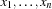
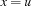
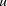
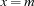
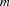

2.8 Distribution Strategies
A distributor is a computational agent implementing a distribution strategy. If a thread creates a distributor, the thread is blocked until the distributor has done its job. If a distribution step is needed, the distributor becomes active and generates the constraint with which the space will be distributed. If there is more than one distributor in existence, one of them is chosen indeterministically whenever a distribution step is needed.
Usually, a distribution strategy is defined on a sequence  of variables. When a distribution step is necessary, the strategy selects a not yet determined variable in the sequence and distributes on this variable.
standard possibilities to distribute on a variable
There are a few standard possibilities to distribute on a variable  :
:
distribute with
 , where
, where  is the least possible value for .
is the least possible value for .distribute with , where  is the largest possible value for
.distribute with , where  is a possible value for
that is in the middle of the least and largest possible value for .distribute with
 , where is a possible value for that is in the middle of the least and largest possible value for (so called domain splitting).
, where is a possible value for that is in the middle of the least and largest possible value for (so called domain splitting).
naive distribution
A naive distribution strategy will select the leftmost undetermined variable in the sequence.
first-fail distribution
A first-fail distribution strategy will select the leftmost undetermined variable in the sequence whose domain in the constraint store has minimal size. In other words, it will select the leftmost undetermined variable for which the number of different possible values is minimal.
For most problems, first-fail strategies yield much smaller search trees than naive strategies.